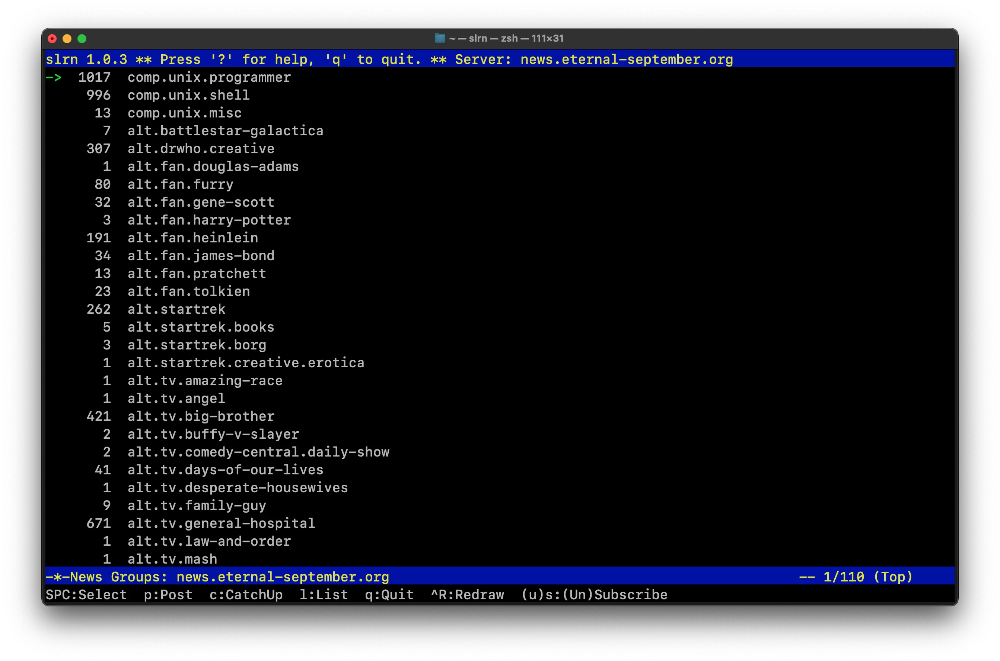
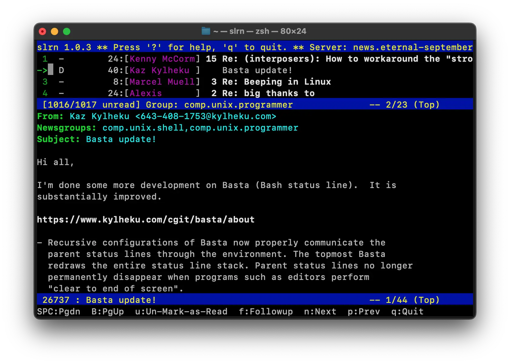

How to set up Usenet access in 2025
In the 90s, before even the Internet existed in our area, I was lucky to be part of Fidonet. It was an amazing experience, that’s hard to explain today. Connecting with people across the globe through a network felt like stepping into the future, sharing messages (and sometimes files) at a time when such communication was rare and magical in its own way. All the memories about Fidonet are always warm. The TUI (Text-based user interface) contained everything you needed.
The visual style of these interfaces reminds me of Teletext as well, but it was so much cooler looking and simpler. There was a raw, unpolished charm to it—blocky fonts, ASCII art, and a straightforward layout that didn’t overwhelm you with options. It was like a digital campfire, where people gathered to exchange ideas, software, or just chat about life, all through the hum of a modem and the patience of waiting for a reply that might take hours or days. That simplicity, paired with the thrill of global connection, made Fidonet feel like a secret club for tech pioneers, and I’ll always cherish being a part of it.
Some time ago I discover a Usenet. I never used it before. I was excited to try Usenet in 2025, since it gives very similar experince to good old Fidonet days. In this post I’m going to share how to install it on modern macOS.
But first you need to create an account at news.eternal-september.org. These credentials will be used to enter the Usenet.
% brew install slrn
% nano ~/.jnewsrc
Then I added to the .jnewsrc all groups that I can find online, I filter out ones that has some messages, here is the list:
comp.unix.bsd.freebsd.announce:
comp.unix.bsd.freebsd.misc:
comp.windows.x:
comp.sys.mac.advocacy:
comp.unix.questions:
comp.unix.admin:
comp.unix.programmer:
comp.unix.shell:
comp.unix.misc:
alt.battlestar-galactica:
alt.books.anne-rice:
alt.books.m-lackey:
alt.books.pratchett:
alt.comics.fandom:
alt.drwho.creative:
alt.fan.blade-runner:
alt.fan.disney.gargoyles:
alt.fan.douglas-adams:
alt.fan.dune:
alt.fan.furry:
alt.fan.hanson:
alt.fan.harry-potter:
alt.fan.james-bond:
alt.fan.pern:
alt.fan.pratchett:
alt.fan.q:
alt.fan.teen.idols:
alt.fan.tolkien:
alt.fandom.cons:
alt.fandom.misc:
alt.holoworld.rpg.startrek:
alt.horror.cthulhu:
alt.music.nirvana:
alt.ql.creative:
alt.startrek:
alt.startrek.books:
alt.startrek.borg:
alt.startrek.creative:
alt.startrek.creative.all-ages:
alt.startrek.klingon:
alt.startrek.lcars:
alt.startrek.role-playing:
alt.startrek.rpg.gsc:
alt.startrek.vs.babylon5:
alt.startrek.vs.battlestar-galactica:
alt.startrek.vs.starwars:
alt.tv.7th-heaven:
alt.tv.alias:
alt.tv.all-my-children:
alt.tv.amazing-race:
alt.tv.american-idol:
alt.tv.angel:
alt.tv.beauty+beast:
alt.tv.beavis-n-butthead:
alt.tv.big-brother:
alt.tv.bold-beautiful:
alt.tv.buffy-v-slayer:
alt.tv.buffy-v-slayer.creative:
alt.tv.cartoon-network:
alt.tv.comedy-central.daily-show:
alt.tv.commercials:
alt.tv.csi:
alt.tv.dark_shadows:
alt.tv.days-of-our-lives:
alt.tv.desperate-housewives:
alt.tv.due-south:
alt.tv.due-south.creative:
alt.tv.er:
alt.tv.family-guy:
alt.tv.firefly:
alt.tv.forever.knight:
alt.tv.forever-night.spoilers:
alt.tv.frasier:
alt.tv.general-hospital:
alt.tv.gilmore-girls:
alt.tv.highlander:
alt.tv.highlander.creative:
alt.tv.knight-rider:
alt.tv.law-and-order:
alt.tv.lost:
alt.tv.mash:
alt.tv.monk:
alt.tv.navy-ncis:
alt.tv.one-life-to-live:
alt.tv.passions:
alt.tv.prisoner:
alt.tv.real-world:
alt.tv.red-dwarf:
alt.tv.sctv:
alt.tv.seinfeld:
alt.tv.sentai:
alt.tv.sentinel:
alt.tv.smallville:
alt.tv.snl:
alt.tv.sopranos:
alt.tv.southpark:
alt.tv.star-trek.ds9:
alt.tv.star-trek.enterprise:
alt.tv.star-trek.next-gen:
alt.tv.star-trek.tos:
alt.tv.stargate-atlantis:
alt.tv.stargate-sg1:
alt.tv.survivor:
alt.tv.tech.hdtv:
alt.tv.the-shield:
alt.tv.the-west-wing:
alt.tv.tiny-toon.fandom:
alt.tv.twenty-four:
alt.tv.twin-peaks:
alt.tv.wiseguy:
alt.tv.x-files:
alt.tv.x-files.analysis:
alt.tv.x-files.creative:
alt.tv.x-files.x-ville:
alt.tv.xena:
alt.tv.xena-subtext:
alt.tv.young+restless:
aus.tv.x-files:
rec.arts.anime.creative:
rec.arts.anime.fandom:
rec.arts.anime.misc:
rec.arts.books.tolkien:
rec.arts.comics.marvel.xbooks:
rec.arts.drwho:
rec.arts.movies.production.sound:
rec.arts.sf.fandom:
rec.arts.sf.tv.babylon5:
rec.arts.sf.tv.babylon5.moderated:
rec.arts.sf.written:
rec.arts.startrek.fandom:
rec.arts.startrek.misc:
rec.arts.startrek.tech:
rec.arts.tv.mst3k.misc:
tw.bbs.rec.tv.x-files:
uk.media.tv.sf.startrek:
uk.media.tv.sf.x-files:
uk.d-i-y:
uk.rec.sheds:
uk.tech.digital-tv:
uk.rec.motorcycles:
uk.comp.sys.mac:
uk.sci.weather:
uk.sport.cricket:
uk.railway:
uk.comp.homebuilt:
uk.rec.cars.maintenance:
uk.rec.gardening:
uk.transport.london:
uk.rec.cycling:
uk.games.video.misc:
uk.rec.audio:
alt.tv.simpsons:
uk.media.tv.sf.drwho:
uk.sport.misc:
uk.music.charts:
alt.astronomy:
alt.games.final-fantasy:
uk.media.radio.bbc-r4:
alt.games.tombraider:
uk.finance:
alt.games.doom:
alt.games.video.sony-playstation:
uk.local.london:
As a next step I should just run
% slrn
But it requires to enter login/password every time, even though I added it to slrnpull.conf, according to the documentation.
So I made a stupid but simple trick that allows me to avoid manual login/password typing every time. This is a simple shell script that does the job using a timer. Just replace login/pass with your own, from the registration email sent to you by news.eternal-september.org. Here is my run_slrn.sh scipt:
#!/bin/bash
# Launch slrn in Terminal
osascript -e 'tell application "Terminal" to activate' -e 'tell application "Te$
# Wait 5 seconds
sleep 7
# Type "alxecho" and press Enter
osascript -e 'tell application "System Events" to keystroke "YOURNAME"' -e 'tel$
# Wait 3 seconds
sleep 1
# Type "pcgtsecwr" and press Enter
osascript -e 'tell application "System Events" to keystroke "YOURPASSWORD"' -e 'te$
As a result I have the acces to Usenet:
 
Shortcuts:
- When reading the message press Enter to go to the next line
- Press